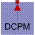

ThermalAmbientDCPMThermal ambient for DC machine with permanent magnets |

|
Diagram
{kind=link}
Information
This information is part of the Modelica Standard Library maintained by the Modelica Association.
Thermal ambient for DC machines with permanent magnets to prescribe winding temperatures either constant or via signal connectors. Additionally, all losses = heat flows are recorded.Parameters (3)
| useTemperatureInputs |
Value: false Type: Boolean Description: If true, temperature inputs are used; else, temperatures are constant |
|---|---|
| Ta |
Value: Type: Temperature (K) Description: Temperature of armature |
| Tpm |
Value: Type: Temperature (K) Description: Temperature of permanent magnet |
Outputs (7)
| Q_flowArmature |
Default Value: temperatureArmature.port.Q_flow Type: HeatFlowRate (W) Description: Heat flow rate of armature |
|---|---|
| Q_flowCore |
Default Value: temperatureCore.port.Q_flow Type: HeatFlowRate (W) Description: Heat flow rate of core losses |
| Q_flowStrayLoad |
Default Value: temperatureStrayLoad.port.Q_flow Type: HeatFlowRate (W) Description: Heat flow rate of stray load losses |
| Q_flowFriction |
Default Value: temperatureFriction.port.Q_flow Type: HeatFlowRate (W) Description: Heat flow rate of friction losses |
| Q_flowBrush |
Default Value: temperatureBrush.port.Q_flow Type: HeatFlowRate (W) Description: Heat flow rate of brushes |
| Q_flowPermanentMagnet |
Default Value: temperaturePermanentMagnet.port.Q_flow Type: HeatFlowRate (W) Description: Heat flow rate of permanent magnets |
| Q_flowTotal |
Default Value: Q_flowArmature + Q_flowCore + Q_flowStrayLoad + Q_flowFriction + Q_flowBrush + Q_flowPermanentMagnet Type: HeatFlowRate (W) |
Connectors (3)
| thermalPort |
Type: ThermalPortDCPM |
|
|---|---|---|
| TArmature |
Type: RealInput Description: Temperature of armature |
|
| TPermanentMagnet |
Type: RealInput Description: Temperature of permanent magnet |
Components (8)
| temperatureArmature |
Type: PrescribedTemperature |
|
|---|---|---|
| temperatureCore |
Type: FixedTemperature |
|
| temperatureStrayLoad |
Type: FixedTemperature |
|
| temperatureFriction |
Type: FixedTemperature |
|
| constTa |
Type: Constant |
|
| temperatureBrush |
Type: FixedTemperature |
|
| temperaturePermanentMagnet |
Type: PrescribedTemperature |
|
| constTpm |
Type: Constant |
Used in Examples (1)
|
Modelica.Electrical.Machines.Examples.DCMachines Test example: Investigate temperature dependency of a DCPM motor |